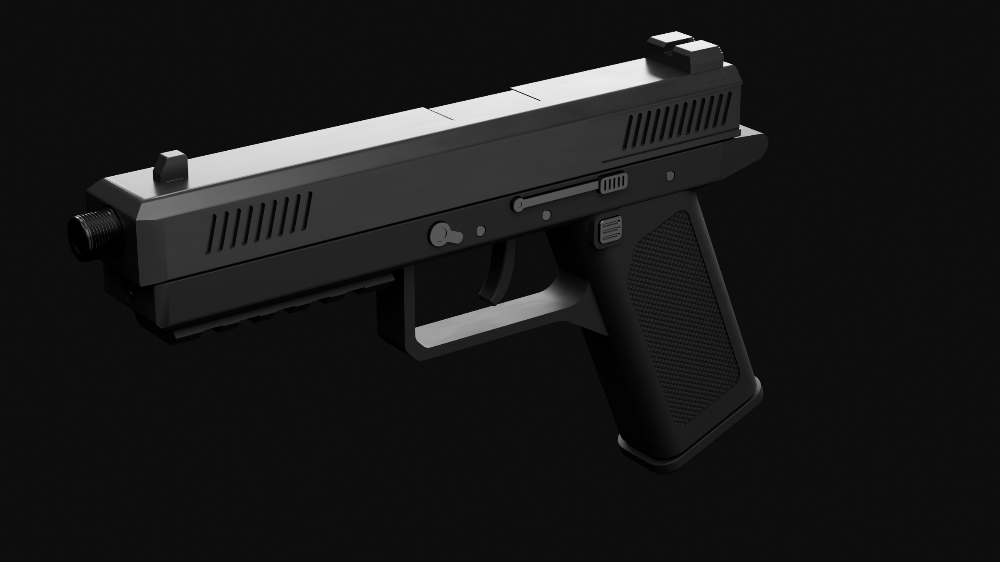
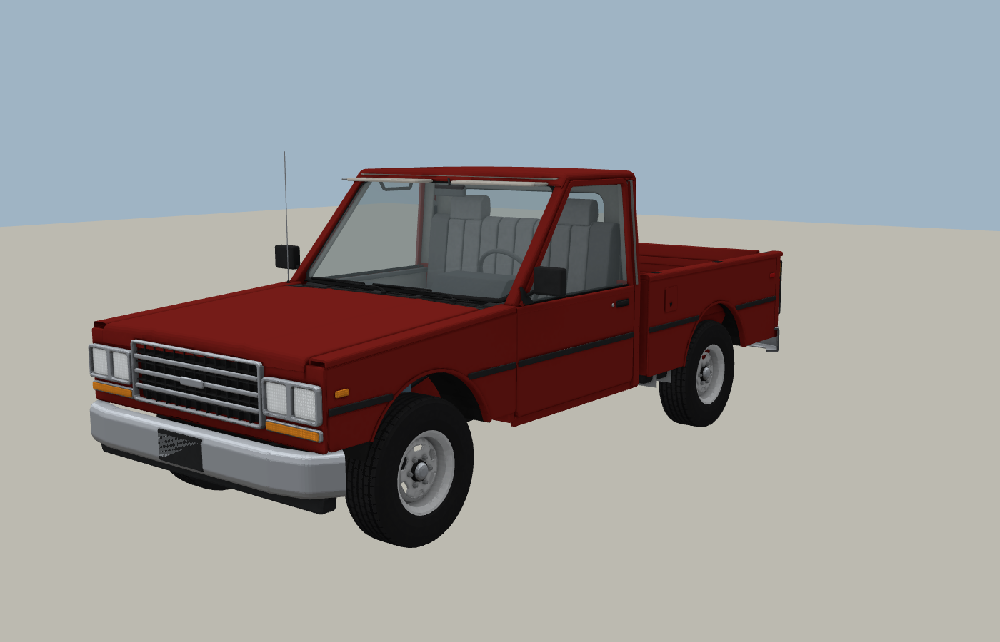
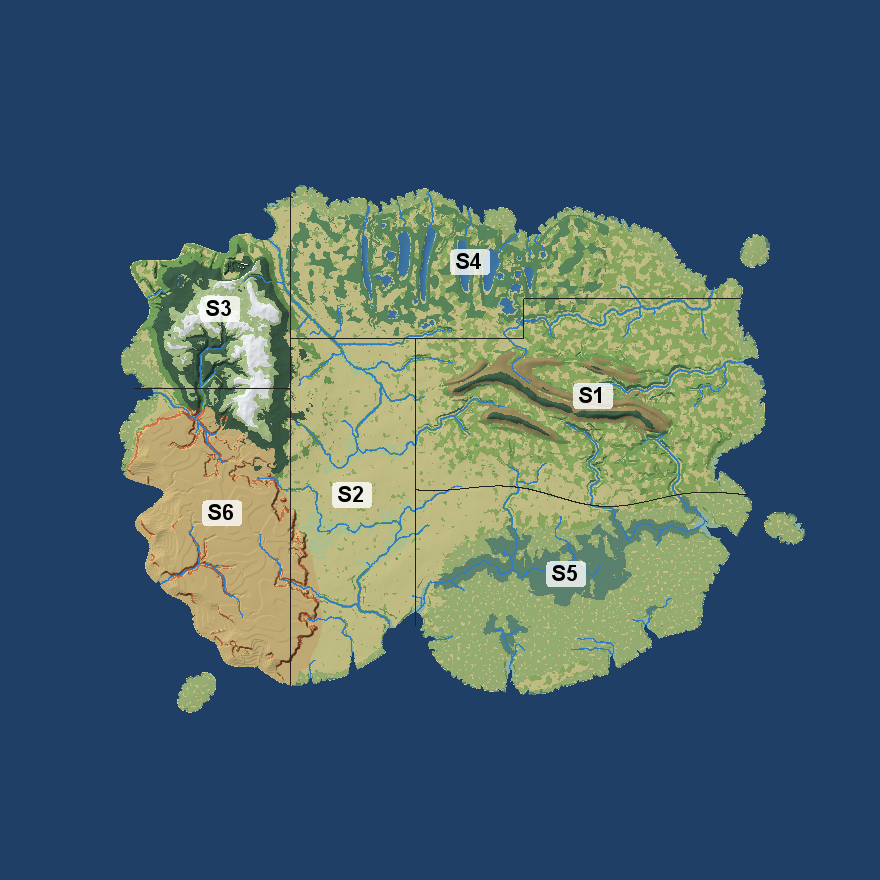

探索系统
全部页面 →
ARMORY
枪械与装备P9、BR51、弹药、配件、装备参数6 把枪
START
新手指南生存基础、开局流程
VEHICLES
载具T15、油耗、维修1 辆INDUSTRY
工业制造机器、能源、配方INFECTED
感染体类型、行为、威胁等级
WORLD
世界与探索生物群系、道路、建筑、地点11 个群系
BUILDINGS
建筑与供电插座、电线、配电盘、照明数据与更新
更新日志 →枪械数据库 1.0.0-alpha
| 名称 | 类别 | 伤害 | 弹匣 | 有效射程 |
|---|---|---|---|---|
| HR-55 战斗步枪 | 步枪 | 26 | 20 | 64 |
| BR-51 战斗步枪 | 步枪 | 18 | 20 | 96 |
| Blackridge .50 | 手枪 | 15 | 7 | 56 |
| C.A.T | 步枪 | 13 | 30 | 40 |
| P9-01 制式手枪 | 手枪 | 7 | 17 | 48 |
| Silverwood 12 | 霰弹枪 | 4.5 ×弹丸 | 2 | 28 |
从 native_guns/*.json 自动生成 · 2026-10-17 构建
最近更新
2026-10-17
雨和雨刷新增 不开光影的雨丝和溅射新增 T15 雨刷、玻璃水
2026-10-17
P9 返工新增 掏枪 / 收枪数值 战术换弹 1.7 秒
2026-10-16
布娃娃新增 死亡后身体倒地